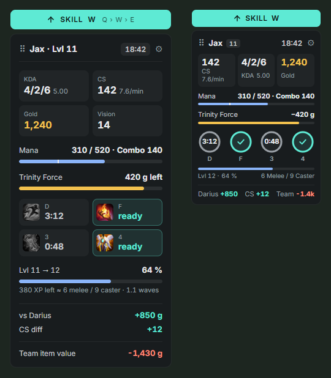

Everything that matters in a fight. Nothing that covers your screen.
A lightweight LoL overlay with your exact CS, summoner spell timers, XP to the next level, mana for your full combo and the gold still missing for your next item – in one small panel next to your HUD.

Made for the moments you lose games
Every value is something you could already see as a player – just ready when you need it.
Mana for your combo
Q+W+E+R cost at your current ranks, with a warning before you go all-in without mana.
Gold to your next item
Follows your build and tells you the moment you can afford the next item.
Summoner spell timers
Flash and co. with countdown, read from your HUD and re-synced every 10 seconds. Item cooldowns too.
Exact CS counter
Read straight from your HUD instead of Riot's rounded value, plus CS/min and XP in minions.
Item value vs. your lane
See who is ahead on items – per player on the Tab scoreboard and for the whole team.
Matchup and auto runes
Win rate per enemy pick in champ select, who wins the early all-in, and runes set on their own page.
Stats window for before and after the game
Live game with all ten players and their ranks, your match history with CS/min, KDA and vision trends per game mode, builds, rune pages and Summoner Spells per champion – with suggestions from lolalytics.com.


Why another LoL overlay?
Many companion apps are big, run on Overwolf and show ads. All You Need takes a different route.
Small and quiet
One panel next to your HUD, every module can be switched off. No pop-ups in the middle of a fight.
No ads, no account
A standalone Windows app. Nothing to sign up for, nothing to sell, and nothing leaves your PC except public game data requests.
Open source
The complete source code is on GitHub under the MIT license – check what it does or build it yourself.
Guides
How the overlay works and what Riot allows.
Exact CS counter for League
Why the game's API only counts CS in steps of 10 and how the overlay reads the exact number.
Summoner spell timers
Your Flash, Teleport and item cooldowns at a glance – and why enemy timers are off limits.
Are LoL overlays allowed?
What Vanguard and Riot's rules mean for overlays, and what can get you banned.
Questions
The honest answers.
Can I get banned for using it?
All You Need never reads or changes the game's memory, injects nothing and sends no inputs. It uses Riot's official Live Client Data API, the League client API that rune and stats tools use, and small screenshots of what is already visible on your screen. Information Riot does not allow (enemy cooldown timers, augment win rates) is deliberately left out. It is not reviewed or approved by Riot, and no third-party tool can promise anything – but it only shows what you could already see or look up yourself. More on what Riot allows.
Why does Windows show a SmartScreen warning?
The app is not code-signed yet, and new unsigned files get a reputation warning. Click More info → Run anyway. Each release lists its SHA-256 checksum, and the full source code is on GitHub.
Does it cost FPS?
It reads a few small screen regions about once per second, analyses them locally and draws a single lightweight panel.
Does it work in fullscreen?
Set League to Borderless or Windowed – no overlay can sit on top of exclusive fullscreen. Resolution and HUD scale are detected automatically.
Do I need Overwolf or an account?
No. All You Need is a standalone Windows app without ads, account or Overwolf.
Is it available in English?
Yes. The interface is available in English and German – switch it in the tray menu under Sprache / Language. On first start it follows your Windows language.
Try it in your next game
Missing something? Share an idea – personal wishes are welcome.